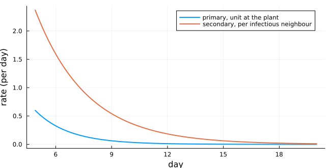
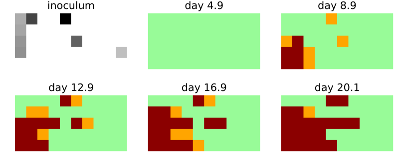
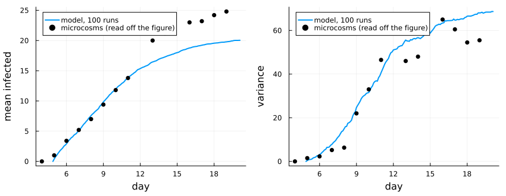
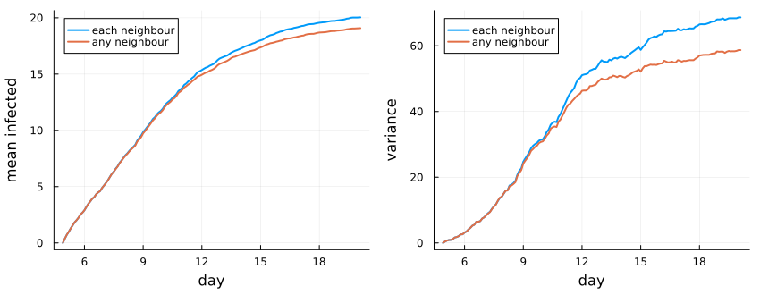

Rhizoctonia solani: primary and secondary infection
Simon Frost
- Overview
- The model
- One microcosm
- Mean and variance
- A choice the source leaves open
- Deviations from the source
Overview
Rhizoctonia solani causes damping-off of seedlings. It infects a plant in two ways: from inoculum in the soil (primary infection) and from a neighbouring infected plant through the mycelium (secondary infection). Kleczkowski et al. (1997) estimated the rates of both from single-plant experiments. They put them into a cellular automaton of a microcosm of 50 radish seedlings. They then compared the mean and the variance of the epidemics it predicts with those of five replicate microcosms. This model is a reproduction: all its parameters come from the source’s Table 1.
ENV["GKSwstype"] = "100"
using EcologicalCellularAutomata
using CellularAutomataCore
using Plots
using StatisticsThe model
The plants stand on a 5 × 10 lattice, 20 mm apart, and nothing lies beyond the edges. A plant is susceptible (0), latent (1) or infectious (2). A step is 0.1 day, starting at day τ_p = 4.9, when primary infection begins. In each step a susceptible plant becomes latent at a total rate R:
- each inoculum unit in the plant’s 20 mm square, at distance
x, addsC_p (1 + η_p x) exp(−σ_p x) exp(−d_p t); - each infectious von Neumann neighbour adds
C_s exp(−σ_s x_d²) exp(−d_s t).
The plant becomes latent with probability 1 − exp(−R Δt). Latent plants become infectious after an exponential latent period of mean 3.89 days.
model = build(:rhizoctonia_contact)CAModel rhizoctonia_contact
Kleczkowski et al. (1997) Rhizoctonia solani primary and secondary infection, secondary per_neighbour
states:
plant::Int8 = 0 ∈ 0:2 # 0 susceptible, 1 latent, 2 infectious
parameters:
a_p = 1.09 # amplitude of primary infection
σ_p = 0.277 # spatial decay of primary infection (1/mm)
η_p = 0.49 # critical-exponential correction (1/mm)
d_p = 0.55 # temporal decay of primary infection (1/d)
τ_p = 4.898 # time offset of primary infection (d)
a_s = 14.9 # amplitude of secondary infection
σ_s = 0.00099 # spatial decay of secondary infection (1/mm²)
d_s = 0.36 # temporal decay of secondary infection (1/d)
τ_s = 3.73 # time offset of secondary infection (d)
latent_period = 3.89 # mean latent period 1/g (d)
x_d = 20.0 # distance between plants (mm)
dt = 0.1 # length of a step (d)
covariates: pathozone
rule: LocalRule(<anonymous function>, VonNeumann(1))Both rates fall with time. Primary infection fades as the inoculum decays, and secondary infection fades as the seedlings become less susceptible:
p = defaults(model)
Cp = p.a_p * p.d_p * exp(p.d_p * p.τ_p)
Cs = p.a_s * p.d_s * exp(p.d_s * p.τ_s)
days = 4.9:0.1:20
plot(days, [Cp * exp.(-p.d_p .* days) Cs * exp(-p.σ_s * p.x_d^2) * exp.(-p.d_s .* days)];
label=["primary, unit at the plant" "secondary, per infectious neighbour"],
xlabel="day", ylabel="rate (per day)", lw=2, size=(650, 330))
One microcosm
Each run places 10 inoculum units at random in the 100 × 200 mm box. The covariate pathozone holds, for each plant, the sum over the units in its square of (1 + η_p x) exp(−σ_p x):
prob = problem(:rhizoctonia_contact; seed=9)
sol = solve(prob; saveat=40)
cover = heatmap(prob.covariates.pathozone; c=:Greys, colorbar=false, aspect_ratio=:equal,
framestyle=:none, title="inoculum")
snaps = [heatmap(u; c=[:palegreen, :orange, :darkred], clims=(0, 2), colorbar=false,
aspect_ratio=:equal, framestyle=:none,
title="day $(round(d; digits=1))")
for (d, u) in zip(rhizoctonia_days(sol), sol.u)]
plot(cover, snaps...; layout=(2, 3), size=(800, 330))
The first panel shades each plant by the inoculum in its square (darker is more). Latent plants are orange and infectious plants dark red. Primary infections start the epidemic next to the inoculum, and secondary infection then spreads it to neighbouring plants.
Mean and variance
The source’s Figure 2 compares the mean and the variance of the number of infected plants over 100 runs with those of the five microcosms. Latent and infectious plants both count as infected, since both show damping-off. The data below were read off that figure, so they are approximate.
data_day = [4, 5, 6, 7, 8, 9, 10, 11, 13, 14, 16, 17, 18, 19]
data_mean = [0, 1.0, 3.4, 5.2, 7.0, 9.4, 11.8, 13.8, 20.0, 21.2, 23.0, 23.2, 24.2, 24.8]
data_var = [0, 1.5, 2.3, 5.2, 6.3, 22, 33, 46.5, 46, 48, 65, 60.5, 54.5, 55.5]
function ensemble(secondary; runs=100)
sols = [solve(problem(:rhizoctonia_contact; seed=s, secondary)) for s in 1:runs]
Y = [rhizoctonia_infected(sol.u[k]) for sol in sols, k in eachindex(sols[1].u)]
return rhizoctonia_days(sols[1]), vec(mean(Y; dims=1)), vec(var(Y; dims=1))
end
d, m, v = ensemble(:per_neighbour)
plot(plot(d, m; label="model, 100 runs", lw=2, xlabel="day", ylabel="mean infected",
legend=:topleft),
plot(d, v; label="model, 100 runs", lw=2, xlabel="day", ylabel="variance",
legend=:topleft);
layout=(1, 2), size=(850, 330), bottom_margin=5Plots.mm, left_margin=4Plots.mm)
scatter!(data_day, data_mean; subplot=1, label="microcosms (read off the figure)", c=:black)
scatter!(data_day, data_var; subplot=2, label="microcosms (read off the figure)", c=:black)
The model follows the source’s model curves closely. The source’s curves pass about 7.5, 13, 17, 20 and 21.8 plants at days 8, 10, 12.5, 15.5 and 20, and its variance about 20, 33, 45, 57 and 66 at days 8, 10, 12, 15 and 20:
at(day) = argmin(abs.(d .- day))
[(day=day, mean=round(m[at(day)]; digits=1), variance=round(v[at(day)]; digits=1))
for day in (8, 10, 12.5, 15.5, 20)]5-element Vector{NamedTuple{(:day, :mean, :variance)}}:
(day = 8, mean = 7.6, variance = 15.0)
(day = 10, mean = 11.9, variance = 31.5)
(day = 12.5, mean = 15.8, variance = 52.7)
(day = 15.5, mean = 18.4, variance = 62.4)
(day = 20, mean = 20.0, variance = 68.7)As in the source, the model settles below the data’s final level, at about 20 of 50 plants. It also follows the sharp rise of the variance after day 8, about one latent period after the first primary infections.
A choice the source leaves open
The source’s rule for secondary infection applies “if an infectious host is located in the immediate neighbourhood”. It does not say whether two infectious neighbours infect faster than one. The model counts each infectious neighbour, as independent sources of infection would. With secondary = :any it counts one however many there are:
d2, m2, v2 = ensemble(:any)
plot(plot(d, [m m2]; label=["each neighbour" "any neighbour"], lw=2, xlabel="day",
ylabel="mean infected", legend=:topleft),
plot(d, [v v2]; label=["each neighbour" "any neighbour"], lw=2, xlabel="day",
ylabel="variance", legend=:topleft);
layout=(1, 2), size=(850, 330), bottom_margin=5Plots.mm, left_margin=4Plots.mm)
The two readings agree until about day 10, when plants with several infectious neighbours become common. After that the literal reading falls behind, in the mean and still more in the variance:
(each_neighbour=(mean=round(m[end]; digits=1), variance=round(v[end]; digits=1)),
any_neighbour=(mean=round(m2[end]; digits=1), variance=round(v2[end]; digits=1)))(each_neighbour = (mean = 20.0, variance = 68.7), any_neighbour = (mean = 19.1, variance = 58.7))The source’s model reaches about 21.8 plants and a variance of about 66 by day 20, so counting each neighbour is the closer reading.
Deviations from the source
foreach(d -> println("- ", d), model_info(:rhizoctonia_contact).deviations)- How rates combine is not stated in the source; independent hazards add: each inoculum unit in a plant's square and each infectious neighbour contributes its rate, and a step turns the total rate R into the probability 1 - exp(-R dt). The literal reading of the secondary rule (one rate if any neighbour is infectious) is available with secondary = :any.
- The source's secondary rule is printed without dt; it is read as the rate r_s times dt, as for primary infection, since r_s alone exceeds 1 per day.
- Plant positions are not given; plant (i, j) stands at the centre of the (i, j)-th 20 mm square of the 100 x 200 mm rectangle, so the squares tile it.
- The delay term of secondary infection is dropped, as the source says it is subsumed into the latent period; it has no effect after day tau_p, when the runs start.
- The run length is not stated; runs last 152 steps of 0.1 d, to day 20.1, which covers the source's Figure 2.
- The latent period is 3.89 d, from the source's Table 1; its text gives 3.98 d.Kleczkowski, A., C. A. Gilligan, and D. J. Bailey. 1997. “Scaling and Spatial Dynamics in Plant–Pathogen Systems: From Individuals to Populations.” Proceedings of the Royal Society B: Biological Sciences 264 (1384): 979–84. https://doi.org/10.1098/rspb.1997.0135.